UDN
Search public documentation:
DevelopmentKitGemsSobelEdgeDetectionJP
English Translation
中国翻译
한국어
Interested in the Unreal Engine?
Visit the Unreal Technology site.
Looking for jobs and company info?
Check out the Epic games site.
Questions about support via UDN?
Contact the UDN Staff
中国翻译
한국어
Interested in the Unreal Engine?
Visit the Unreal Technology site.
Looking for jobs and company info?
Check out the Epic games site.
Questions about support via UDN?
Contact the UDN Staff
UE3 ホーム > Unreal Development Kit Gems > ゾーベルエッジ検出ポストプロセス エフェクト
UE3 ホーム > ポストプロセス エフェクト > ゾーベルエッジ検出ポストプロセス エフェクト
UE3 ホーム > ポストプロセス エフェクト > ゾーベルエッジ検出ポストプロセス エフェクト
ゾーベルエッジ検出ポストプロセス エフェクト
2011年3月に UDK について最終テスト実施済み
PC 対応
概要
マテリアルシェーダー
オフセットの計算
各ピクセルでは、それを取り囲む 8 個のピクセルをサンプリングする必要があるため、シーンデプスをサンプリングする際に UV ルックアップをオフセットする必要があります。スクリーン座標は 0 から 1 までの値を取り、0 から解像度の幅 / 高さまでの値を取らないため、シェーダーは、相対的なピクセルの目盛りを計算しなければなりません。オフセットの目盛りを調整することによって、最終的なエッジのサイズを制御することが可能になります。最善の結果を得るには、ResolutionX および ResolutionY を現在の解像度にセットする必要があります。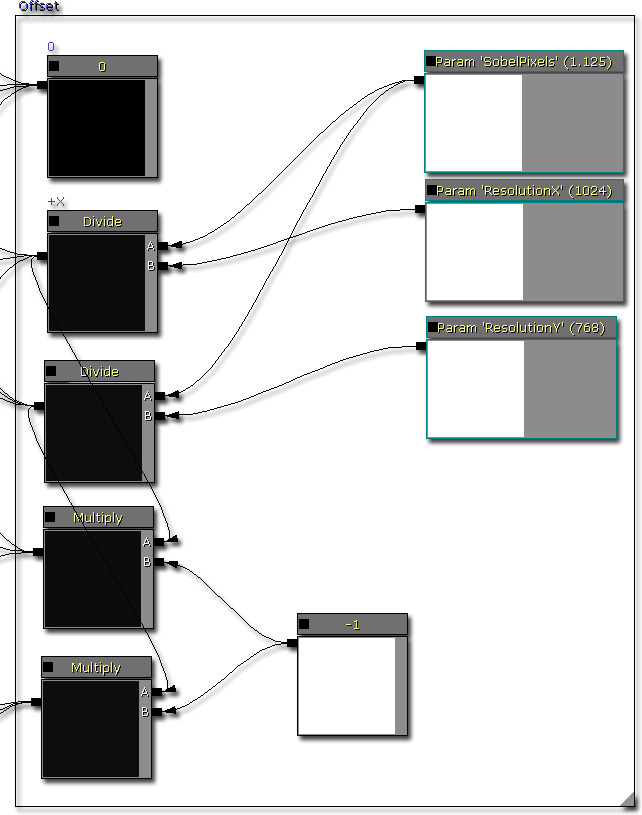
オフセットの使用
サンプルの目盛りは、計算された後で使用されなければなりません。そのためには、Append (追加) マテリアルノードを使用して Vector2 を作成します。その結果得られる Vector2 は、次に、相対的なスクリーン位置に追加されます。相対的なスクリーン位置は、0.f から 1.f の間にクランプされます。これによって、デプスルックアップがラップのためにリークするのを防ぎます。シーンデプスを正規化する必要はありません。値の全範囲を保つほうが便利だからです。以上のことが、あらゆる可能な組み合わせについて実行されます。すなわち、次のようになります。- UV02 (X = +offset, Y = -offset)
- UV12 (X = +offset, Y = 0)
- UV22 (X = +offset, Y = +offset)
- UV01 (X = 0, Y = -offset)
- UV21 (X = 0, Y = +offset)
- UV00 (X = -offset, Y = -offset)
- UV10 (X = -offset, Y = 0)
- UV20 (X = -offset, Y = +offset)
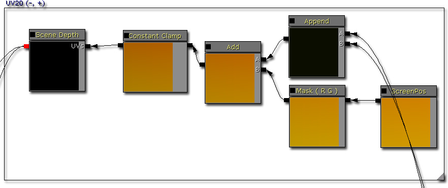
X 値の計算
X 値の計算を計算する公式は、次のようになります。 0 - UV00 - (UV01 * 2) - UV02 + UV20 + (UV21 * 2) + UV22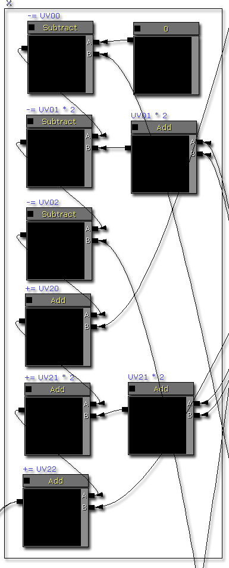
Y 値の計算
Y 値の計算を計算する公式は、次のようになります。 0 - UV00 + UV02 - (UV10 * 2) + (UV12 * 2) - UV20 + UV22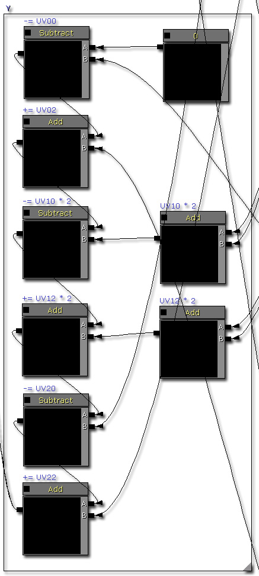
距離の平方を計算する
距離の平方を計算する公式は次のようになります。 (X * X) + (Y * Y) この距離の平方の値は、エッジの検出に使用することができます。
距離の平方の値を比較する
ここから、距離とスカラーパラメータの比較が行われます。シーンデプスの変化が急激な場合、距離の平方値は大きくなります。したがって、単純な比較は、エッジがどこにあり、どこにないかを検出するために使用されます。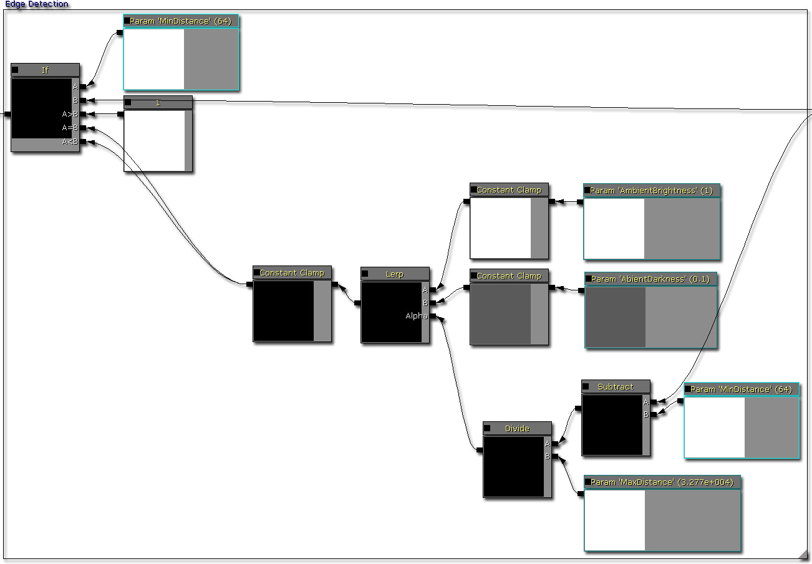
コントラストパス
コントラストを使用すると、値の上限を上げるとともに値の下限を下げることができます。これは、エッジ検出の「シャープさ」を改善しなければならない場合に有効です。デプス値がゆっくりと変化するスロープに役立ちます。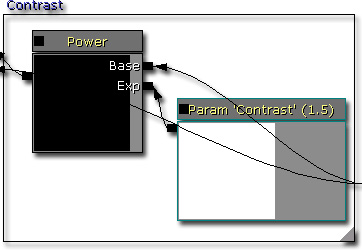
最小輝度パス
コントラストのパスの後であっても、まだグラディエントが生じます。グラディエントを取り除くには、一定の値を上回るピクセル値を 1 にセットするとともに、他をすべて 0 にセットします。これによってグラディエントはすべて除去されますが、他のアーティファクト (エイリアシングや面積が大きい黒の部分など) が生じる場合があります。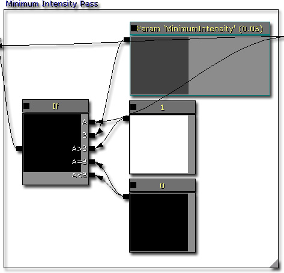
デプス除外パス
これまでで、このシェーダーは、かなり遠くにある天空やオブジェクト上にアーティファクトを作ることがあります。天空内でエッジが絶対に生じないということが分かっているのであれば、それらのピクセルを単にスキップしてしまう方が早くすみます。
合成パス
すべてのパスが終わると、グレイスケール テクセルが作られます。シーンテクスチャをこれに掛け合わせるだけで、エッジが加わります。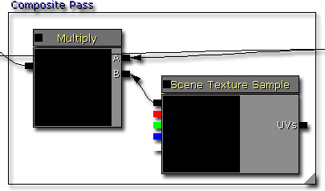
完成!
クリックすると、フルサイズでシェーダーを見ることができます。 次は、ゾーベルエッジ ポストプロセス エフェクトを使用してレンダリングされたレベルのスクリーンショットです。
次は、ゾーベルエッジ ポストプロセス エフェクトを使用してレンダリングされたレベルのスクリーンショットです。
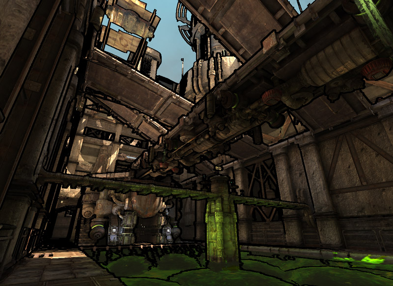
ポストプロセス エフェクトの調整
合成パスを無効にする
合成パスを無効にすると、ゾーベルエッジ検出の結果とシーンサンプル テクスチャ ノードをシェーダーが掛け合わせるステップを省略します。写真のようなリアルなレンダリングを行わない場合に適しています。
最小輝度パスを無効にする
最小輝度パスを無効にすると、入力値を下回るピクセル値をシェーダーが削除するステップを省略します。写真のようなリアルなレンダリングを行い、シーンによりデプスを追加する場合に適しています。
コントラストパスを無効にする
コントラストパスを無効化すると、シェーダーがピクセル値を幾何級数的に調整するステップを省略します。中間地点から値を両端方向に押しやるのではなく、生の値を使用する場合に適しています。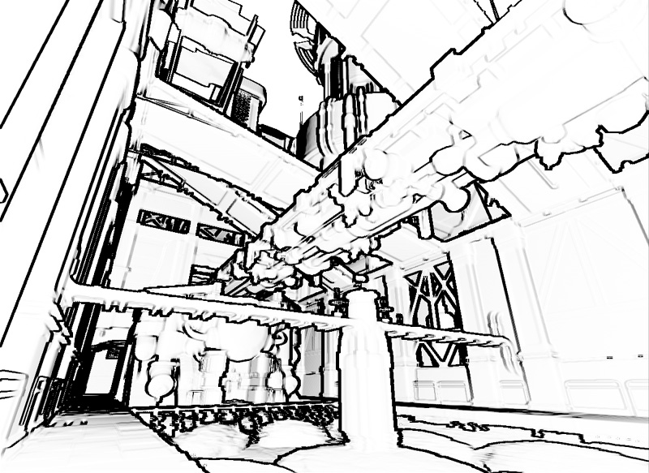
デプス除外バスを無効にする
デプス除外バスを無効にすると、デプス値が入力値よりも大きいピクセルを、シェーダーがスキップしていたステップを省略します。通常は、このパスを使用して、天空にアーティファクトが生じないようにするべきです。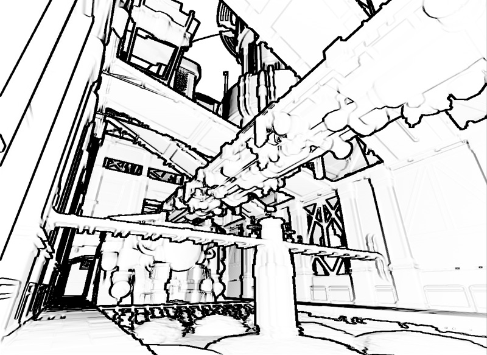
デプス除外距離を調整する
この値を調整することによって、デプス値が入力値よりも大きいピクセルをスキップすることができます。この値を小さく設定しすぎると、シェーダーは過剰に多くのピクセルをスキップしてしまいます。高く設定しすぎると、他の部分でアーティファクトが発生する可能性があります。シーンやゲームのアートスタイルに最適な値を見つける必要があります。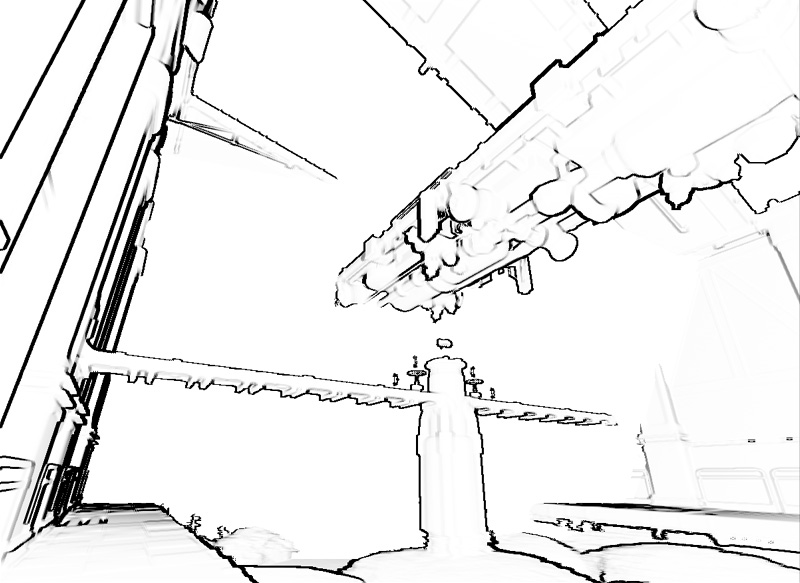
コントラストの強さを調整する
コントラストの強さを調整することによって、通常 0.5f である中間地点からピクセル値を両端方向に押しやることができるようになります。したがって、値が 0.f に近い場合は、値がこの方向に押しやられ、1.f に近い場合は、値がその方向に押しやられます。
最小輝度を調整する
この値を調整することによって、この入力値よりも低いピクセル値を含める / 除外することができるようになります。したがって、明瞭なラインが必要な場合は、この最小輝度を小さい値にセットし、不明瞭なパッチが必要な場合は、この値を大きくします。
環境光の輝度と暗度を調整する
これらの値を調整することによって、シーンの全体的な輝度 / 暗度を引き締めたり緩めたりすることができます。
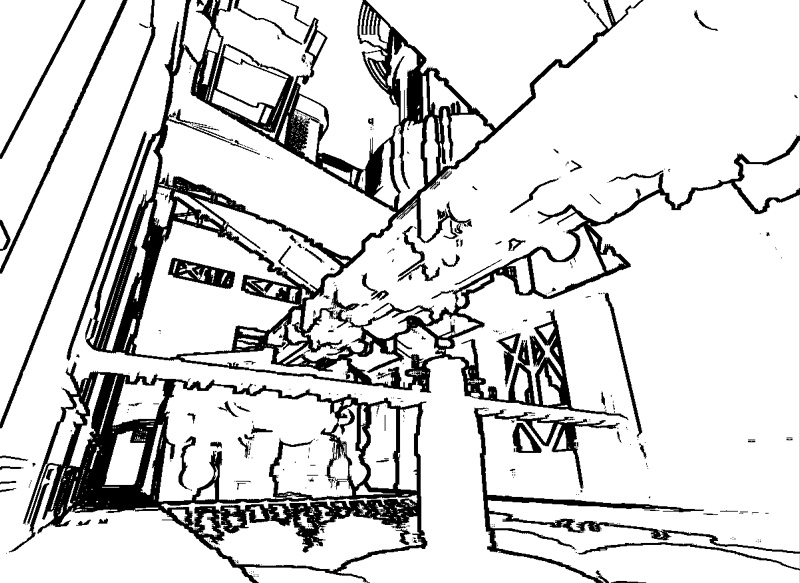
ゾーベル ピクセル オフセットを調整する
この値を調整することによって、現在のピクセル座標からより遠くにあるピクセルをサンプリングすることができるようになります。これによって、エッジを効果的に細くしたり太くしたりすることができます。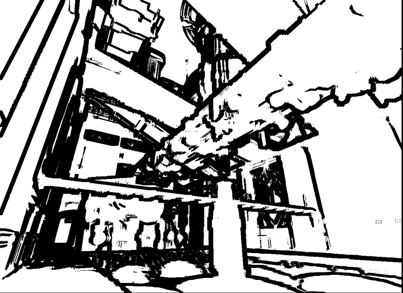
使用方法
関連テーマ
結論
ダウンロード
- このドキュメントで使用されているコンテンツは、 ここから ダウンロードすることができます。 (SobelEdgeContent.zip)